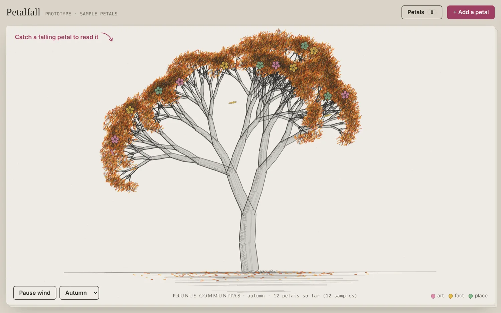
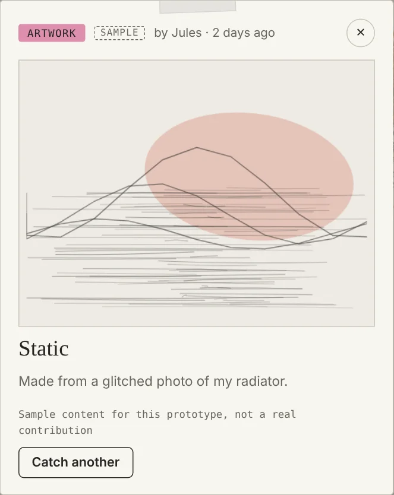
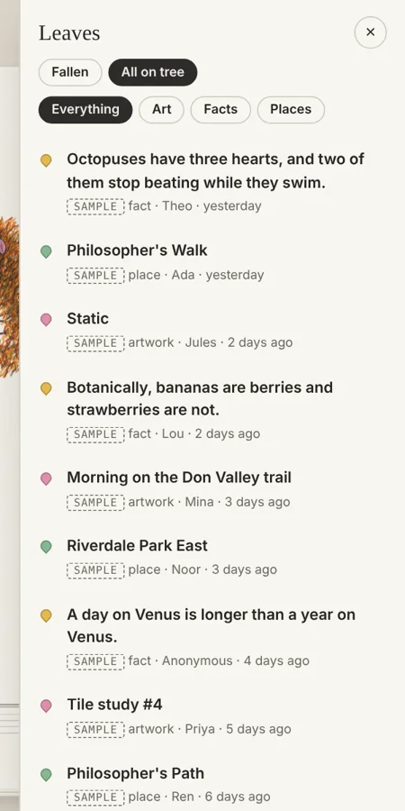
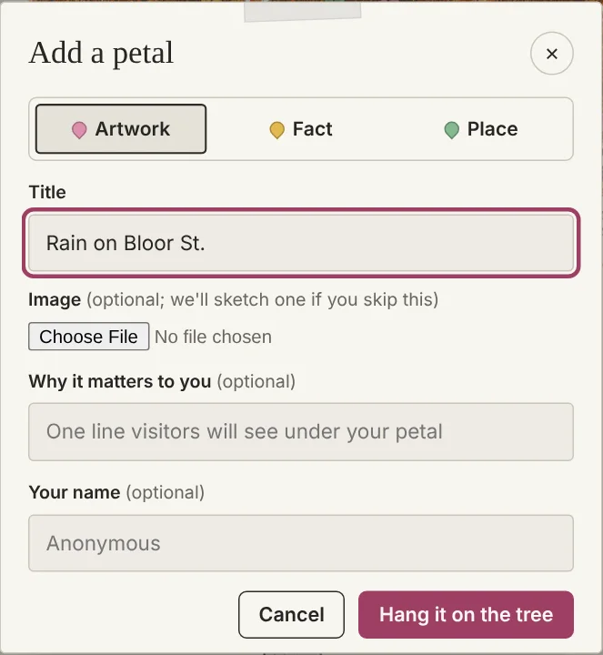

Leavefall
Community tree website · from the idea board
- Role
- UX designer, solo project
- Timeline
- 2026
- Tools
- Figma, HTML / CSS / JS
- Format
- Interactive prototype

Concept
A tree that sheds leaves. Each leaf holds something a visitor chose to share: an artwork, a random fact, or a place that matters to them. You catch a falling leaf to read it.
Goal
A calm, slow place to browse, where strangers leave small things for each other. It is a community version, so visitors can add their own leaves to the tree.
Design decisions
- Sketchbook look: the tree is drawn in pencil on a paper sheet, with small notes set on the page like plate captions, so the drawing stays the focus
- Three leaf types, each with its own colour: art (pink), fact (yellow), place (green), explained by a small legend
- Catching leaves by hand: leaves drift down on their own, or tap a leaf on the tree to read it without waiting
- Control and comfort: wind can be paused, motion respects the reduced-motion setting, and the tree changes with the season
- A leaves drawer lists everything that has fallen, so a leaf you missed is easy to find again, with filters for art, facts and places
- Adding is short: choose a type, fill one or two fields, add an optional note and name, and the new leaf grows on the tree and falls soon after
Key screens



Try the prototype
Sample leaves only. Leaves you add are saved in your own browser. Open full screen ↗